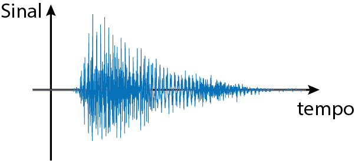
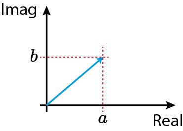
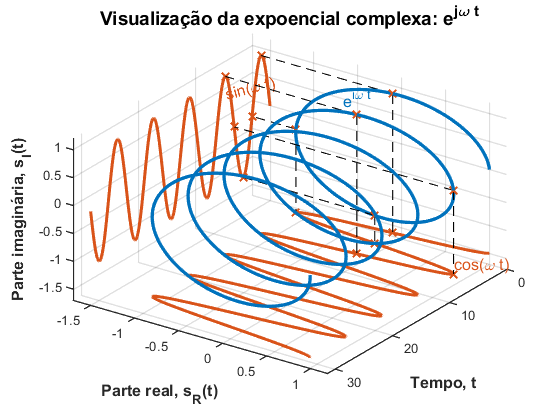
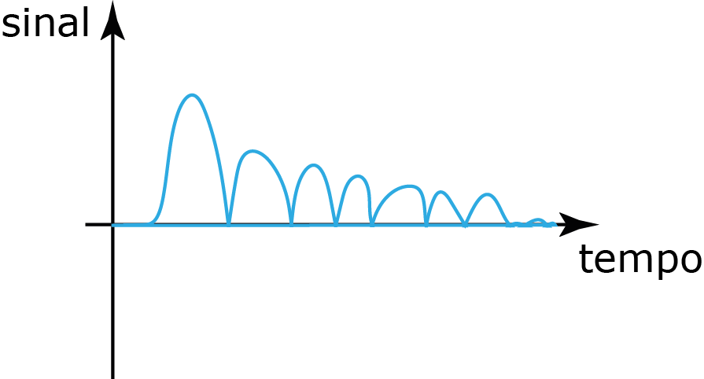
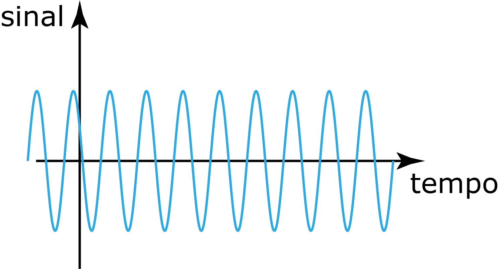
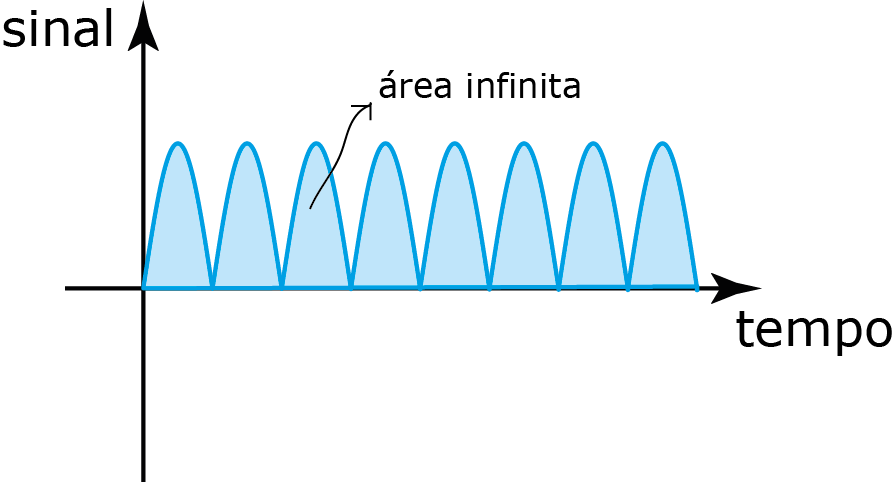
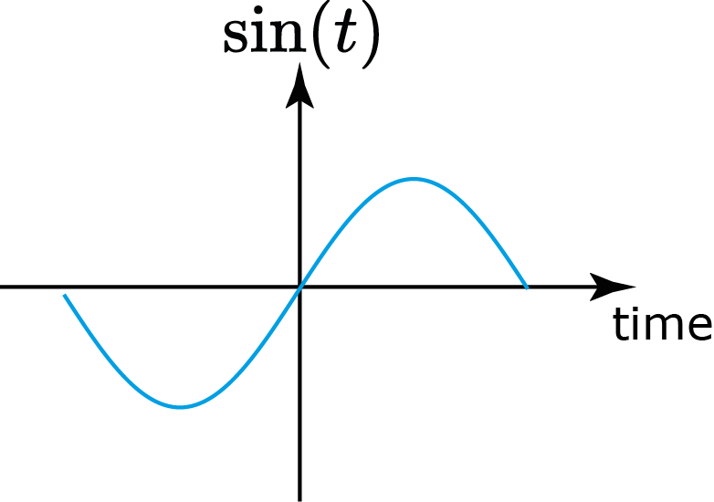
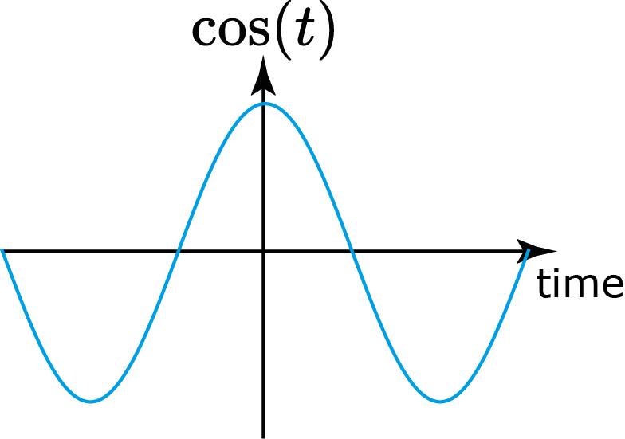
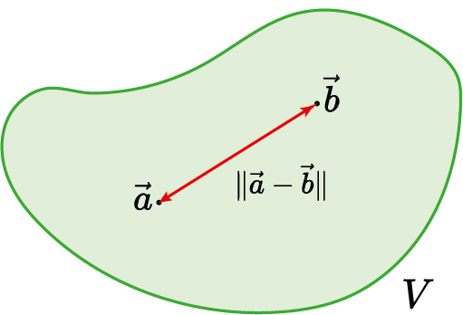

Aula 1:
Introdução à disciplina Sinais e Sistemas em Eng. Elétrica
SEL0383
4 de agosto de 2025

- Slides;
- Notas de aula;
- Listas de exercícios;
- Vídeos relacionados aos tópicos;
- Códigos, exemplos ilustrativos, etc...

O que é um sinal?
Sinal é tudo que carrega informação.
O que é um sistema?
Sistema é tudo que modifica um sinal.

Sistema é tudo que modifica um sinal.

Telecomunicações

Telecomunicações
Internet
Indústria: variáveis de processo
Carros inteligentes

Corpo Humano


Corpo Humano


Mercado Financeiro

Aprender propriedades que os sinais obdecem quando passam por uma classe especial de sistemas:
Sistemas Lineares e Invariantes no Tempo (SLIT)
Função matemática $g:\mathbb{R}\to\mathbb{R}$
Os mesmos conceitos são validos para dimensões maiores
($\mathbb{R}^2,\mathbb{R}^3$,...$\mathbb{R}^n$)
Função matemática $g:\mathbb{R}\to\mathbb{C}$
Números complexos trazem benefícios na análise de sinais.

$$z=a+jb$$
$j=\sqrt{-1}$
$$z=e^{j\omega t}$$

$$z=e^{j\omega t}$$
Tempo Contínuo vs Tempo Discreto

$g:\mathbb{R}\to\mathbb{R}$
Tempo Contínuo vs Tempo Discreto

$g:\mathbb{Z}\to\mathbb{R}$
Determinístico vs Estocástico
Ex: Tensão e corrente de um circuito elétrico.
Determinístico vs Estocástico

Ex: mercado de ações, volume de chuvas, etc.
Sinal de energia
$$\begin{equation} E=\int_{-\infty}^\infty g(t)^2dt < \infty \end{equation}$$
Sinal de energia
$$\begin{equation} E=\int_{-\infty}^\infty g(t)^2dt < \infty \end{equation}$$ Sinal de energia
$$\begin{equation} E=\int_{-\infty}^\infty g(t)^2dt < \infty \end{equation}$$
Sinal de energia
$$\begin{equation} E=\int_{-\infty}^\infty g(t)^2dt < \infty \end{equation}$$
Sinais de energia são utilizados para transmitir informação!
Sinal de potência
$$\begin{equation} P_\text{med}= \lim_{\tau\to\infty} \frac{1}{2\tau}\int_{-\tau}^\tau g(t)^2dt \end{equation}$$ Sinal de potência
$$\begin{equation} P_\text{med}= \lim_{\tau\to\infty} \frac{1}{2\tau}\int_{-\tau}^\tau g(t)^2dt \end{equation}$$
Sinal de potência
$$\begin{equation} P_\text{med}= \lim_{\tau\to\infty} \frac{1}{2\tau}\int_{-\tau}^\tau g(t)^2dt \end{equation}$$ Sinal de potência
$$\begin{equation} P_\text{med}= \lim_{\tau\to\infty} \frac{1}{2\tau}\int_{-\tau}^\tau g(t)^2dt \end{equation}$$
Sinais de potência são utilizados para fornecer energia para um sistema!
Energia vs Potência
$$\begin{equation} E=\int_{-\infty}^\infty g(t)^2dt \end{equation}$$ $$\begin{equation} P_\text{med}= \lim_{\tau\to\infty} \frac{1}{2\tau}\int_{-\tau}^\tau g(t)^2dt \end{equation}$$Sinal de energia não pode ser sinal de potência e vice-versa
Sinal ímpar:
$$ g(t)=-g(-t),\quad \forall t\in\R $$Sinal ímpar:
$$ g(t)=-g(-t),\quad \forall t\in\R $$ Sinal ímpar:
$$ g(t)=-g(-t),\quad \forall t\in\R $$
Sinal par:
$$ g(t)=g(-t),\quad \forall t\in\R $$Sinal par:
$$ g(t)=g(-t),\quad \forall t\in\R $$ Sinal par:
$$ g(t)=g(-t),\quad \forall t\in\R $$
Todo sinal pode ser escrito como a soma da parte par com a ímpar
$$g(t)=g_p(t)+g_i(t)$$ em que $$\small\begin{align*} g_p(t)&=\frac{1}{2}(g(t)+g(-t))\\ g_i(t)&=\frac{1}{2}(g(t)-g(-t)) \end{align*}$$
- Degrau Unitário;
- Retângulo Unitário;
- Sinc (seno normalizado);
- Impulso Unitário;


O que é um vetor?
$V$ é um espaço vetorial (ex: $\mathbb{R}^n$);
$E=\{\hat{e}_1,\ldots,\hat{e}_n\}$ é uma base de representação;
$\{v_1,\ldots,v_n\}$ são as coordenadas em relação a base $E$.


O que é uma norma?
Medida de distância dentro do espaço vetorial

Medida de tamanho de um vetor

Se $\|\vec v\|=1$ então $\vec v$ é dito ser vetor unitário e é denotado por $\hat{v}$.
O que é ortogonalidade?

O que é uma base ortogonal?